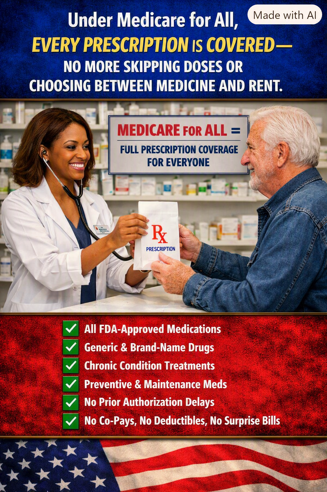

Article 34: No One Should Have to Choose Between Medicine and Rent
Making essential prescriptions affordable for everyone

Download illustrated Word document (.docx)
MEDICARE FOR ALL | ARTICLE 34
Prescription coverage that puts health before financial hardship
Illustration supplied for Article 34. It depicts the proposed goal of comprehensive prescription coverage, not benefits guaranteed under current law.
The prescription a patient cannot afford is a treatment that cannot work
A physician can make the right diagnosis and prescribe the right medicine. A pharmacist can have it ready. But if the patient reaches the counter and discovers that the price is beyond reach, the entire chain of care breaks down. For too many Americans, the decision is not whether medicine will help. It is whether paying for it means falling behind on rent, groceries, utilities, or transportation.
People may stretch pills, skip doses, postpone refills, or abandon treatment altogether. These choices can make manageable conditions harder to control and, in some cases, contribute to avoidable complications and hospital visits. A healthcare system that finances the examination but leaves the treatment unaffordable is only doing half the job.
What Medicare for All should change
A comprehensive Medicare for All system should include medically necessary outpatient prescription drugs as a core benefit, without premiums, deductibles, or copayments at the pharmacy counter. Coverage should follow the person, not the employer, insurance network, or annual enrollment decision. Patients with diabetes, asthma, heart disease, cancer, mental health conditions, and other illnesses should be able to follow prescribed treatment without fearing the bill.
This is a policy goal, not a description of today’s Medicare. Existing Medicare prescription benefits have their own rules, formularies, and cost-sharing provisions. A future single-payer law would need to specify which medicines are covered, how clinical exceptions work, and how prices are negotiated.
Lower prices without sacrificing sound medicine
Public purchasing power could be used to negotiate drug prices, encourage effective generic and biosimilar alternatives, and reduce duplicative insurance administration. Strong safeguards would still be needed to preserve access to clinically appropriate brand-name medicines when alternatives are unsuitable. The objective is not simply to pay every price demanded; it is to ensure access while spending public funds responsibly.
Prior authorization should not become a barrier to care
Patients should not face unnecessary paperwork or prolonged delays for routine, evidence-based treatment. Some clinical review may remain appropriate for safety, rare therapies, or exceptional circumstances, but it should be transparent, prompt, appealable, and guided by medical evidence rather than incentives to deny payment.
The economic case is also a human case
When patients can consistently take appropriate medicines, they may avoid complications, missed work, and more intensive treatment. The size of any savings depends on drug prices, utilization, program design, and health outcomes; no responsible proposal should promise that every prescription will automatically save money. But it is equally irresponsible to ignore the cost of untreated illness and preventable suffering.
Employers would no longer need to manage separate prescription insurance benefits under a fully implemented universal program. Workers changing jobs, starting businesses, retiring, or losing employment would not lose their medicine coverage because their employment changed.
A practical standard for comprehensive coverage
Coverage for clinically appropriate generic and brand-name medicines, including treatments for chronic conditions.
No patient cost-sharing for covered prescriptions at the point of dispensing.
Clear, evidence-based coverage standards, with rapid exceptions and independent appeals.
National price negotiation and transparent purchasing rules that protect access and innovation.
Continuity of medication when people change jobs, move, or experience financial hardship.
A country that can prescribe care should make care possible
The question should never be whether a family can afford to obey medical advice. We can build a system in which the doctor’s recommendation is not defeated by the price at the pharmacy counter. That is the promise worth pursuing: comprehensive prescription coverage, sensible purchasing, and the freedom to get well without going broke.
Willis Butts • Medicare for All advocacy series • Article 34
Share This Article
Help others explore the ideas and evidence behind Medicare for All.
When posting on Facebook, paste these hashtags into your post text. Sharing services may not automatically include them.